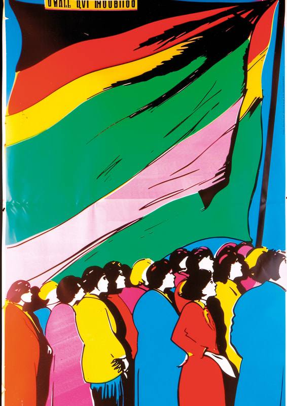
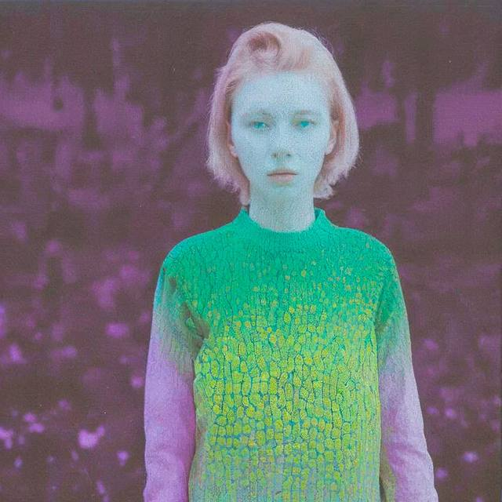

Awards and selections, 2026
Recognitions
- 2026UnumExperimental Artist Award, BAIFF Burano AI Film Festival→
- 2026UnumBest Experimental Film, AI Film Fest Monaco→
- 2026UnumEcomic Digital Art Award selection; Museo Nazionale Romano, Rome→
- 2026EuthanasiaOfficial selection, FOTOGENIA, Mexico City; AI.motion, IULM, Milan→
- 2026Funny ThingsOfficial selection, River Film Festival, Padua→
- 2026Unstill lifeSelected for NEXT ART AI, Hoban Cultural Foundation→
Earlier prizes and exhibitions are in the About page and in the CV.
02 · Installations and series
Works


032024 · 12 images
Errancies
AI Yoga, curated by Valerio Borgonuovo, Meet Digital Culture Center, Milan.

03 · Essays and graphic novels
Books

04 · Selected articles
Writing
- Estendere la mente con le IA generative L'Indiscreto
- Le IA e la co-creazione di un romanzo L'Indiscreto
- Il futuro dell'intelligenza artificiale: un dialogo con Nello Cristianini L'Indiscreto
- Do Not Answer: Bogna Konior and the Dark Forest of the Internet The Philosophical Salon
- The End of Algorithmic Denialism The Philosophical Salon
- From the Representationalist Stance to Conceptual Blending in AI-generated Images Itinera
- Contro il copyright. Pirateria, disobbedienza civile e creatività collettiva Engramma
Considered a pioneer of digital and AI art in Italy, his practice develops a distinctive aesthetic grounded in creative prompting and in the valorization of generative errors, framed by his ongoing research on “semantic attractors” in latent space.
About and exhibitions →